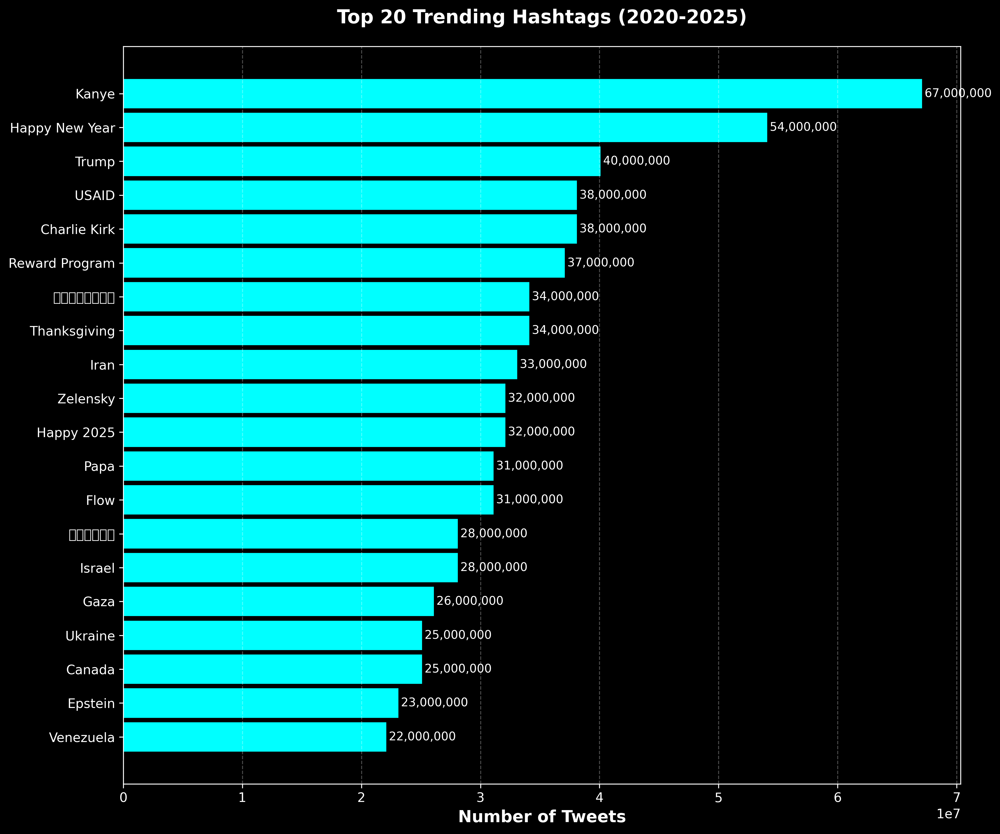
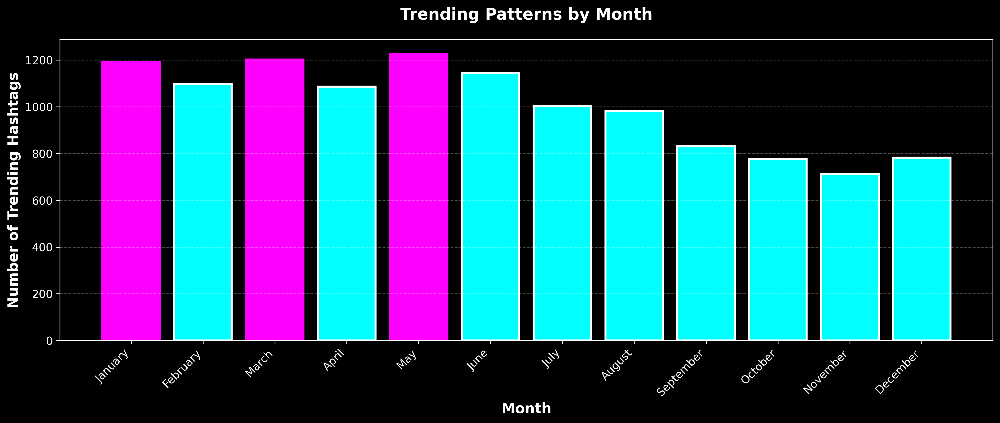
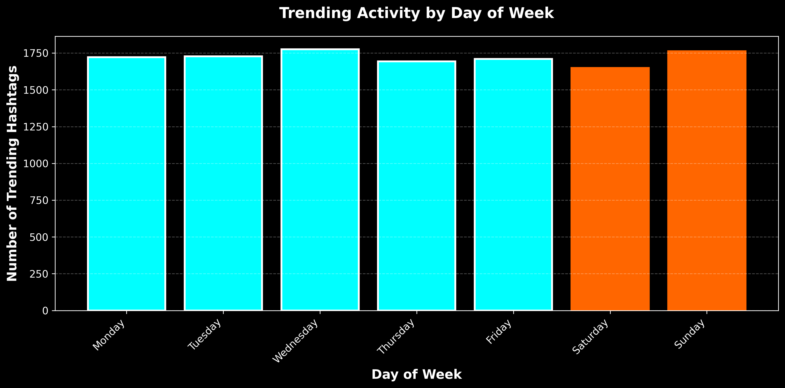
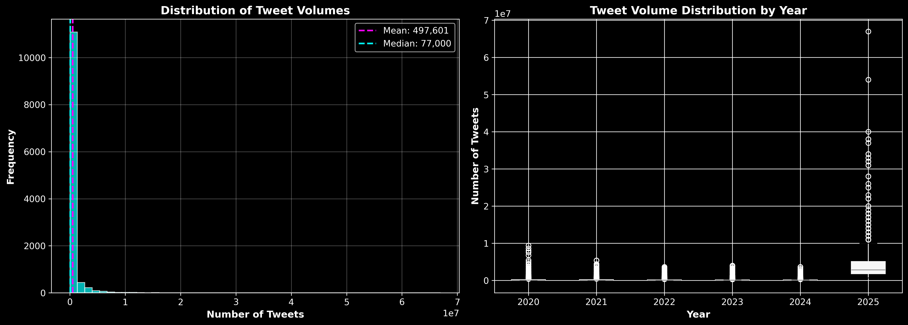
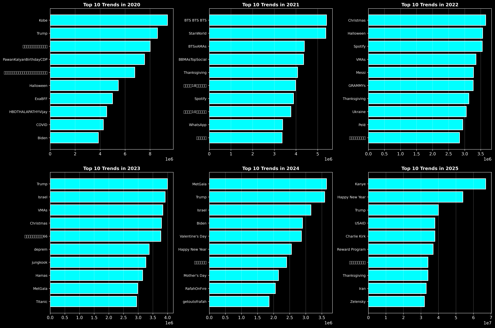

Twitter/X Trending Hashtags Analysis
Exploring Viral Patterns & Social Media Trends (2020-2025)
Project Overview
A comprehensive exploratory data analysis of trending hashtags on Twitter/X from 2020 to 2025. This project analyzes over 12,000 trending entries to uncover patterns in viral content, major world events, and social media engagement metrics.
Using Python, Pandas, and data visualization libraries, I examined temporal patterns, identified peak trending periods, and analyzed how major global events influenced social media conversations.
Key Findings
Visualizations
Trending Hashtags by Year

Analysis of trending activity across six years (2020-2025). Shows consistent high engagement from 2020-2023, with a notable decline in 2024-2025 as the dataset approaches present day.
Top 20 Trending Hashtags (2020-2025)
The most viral hashtags over the entire period. Dominated by major cultural figures (Kanye, Trump), holidays (New Year, Thanksgiving), and global events (Ukraine, Israel/Gaza, Iran).
Trending Activity Heatmap (Year vs Month)

Temporal patterns revealing seasonal variations in trending activity. March and July show consistently high engagement across multiple years, while late 2024 shows decreased activity.
Monthly Trending Patterns
Aggregate monthly analysis shows March, January, and May as peak months for viral content, likely driven by seasonal events and new year momentum.
Day of Week Analysis
Trending activity shows relatively consistent patterns throughout the week, with slight increases mid-week (Tuesday-Thursday) as major news cycles peak.
Tweet Volume Distribution
Distribution analysis reveals a heavily right-skewed pattern, with most trending topics garnering moderate engagement while a small number achieve massive viral reach (10M+ tweets).
Top Trends by Year (Detailed)
Year-by-year breakdown of the top 10 trending hashtags, showing the evolution of viral content from COVID-dominated 2020-2021 to more diverse topics in recent years.
Key Insights
- Political events and cultural moments dominate trending conversations, with Trump, Kanye, and international conflicts consistently generating massive engagement
- Holiday-related hashtags (New Year, Thanksgiving) reliably trend every year, showing predictable seasonal patterns
- Major global events (Ukraine war, Israel/Gaza conflict, Iran tensions) drive sustained trending activity over extended periods
- Trending patterns show a significant decline in late 2024-2025, likely due to incomplete data collection as we approach present day
- The distribution of tweet volumes is highly skewed - a small number of hashtags achieve viral status (50M+ tweets) while most trend with more modest engagement
- March and January emerge as the highest-activity months, benefiting from news cycle momentum and new year engagement